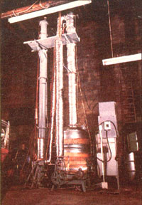
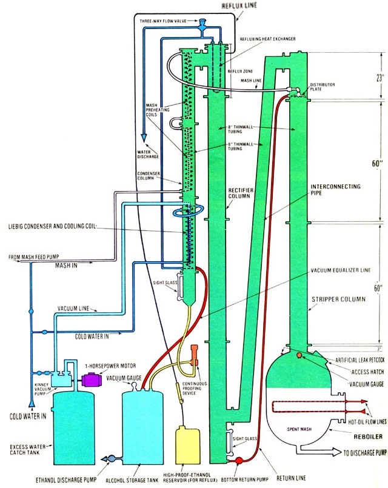
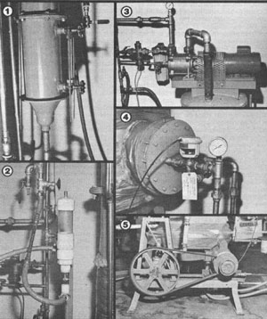
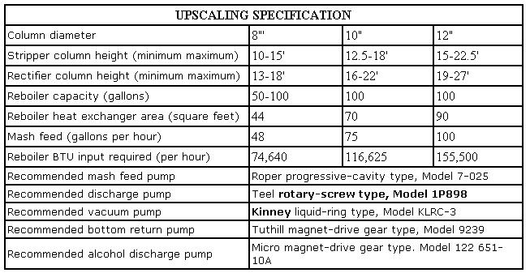

Over the past several years, as many of you already know, there's been a tremendous amount of public interest in homeproduced fuel alcohol, especially among people in the agricultural community. Unfortunately, a small-scale operation-such as that which might be set up by a handy individual with a limited budgetoften isn't as time-and energy-efficient as are commercial plants . . . simply because a backyard facility likely doesn't have the twin advantages of large capacity and state-of-the-art engineering.
As a result, the owner of an "appropriate"-sized fuel factory-though enjoying the satisfactions of lower initial plant cost and energy independence-might still have to "pay the piper" in terms of operating convenience and production expense. So, in an attempt to combine the desirable features of a homestead backyard still and an industrial behemoth, MOTHER's researcher Clarence Goosen has spent the better part of a year designing and building a distillation system that operates under vacuum . . . to deliver a contin uous flow of 185 proof ethanol at the lowest possible operating expense.
CONVENTIONAL CONSTRUCTION
In essence, the cost-conscious designerdeveloped an efficient atmosphere still, which he then modified to incorporate a vacuum system. Thus the unit's "negative pressure" capability is an option that can bechosen or discarded by the builder.
Clarence's still uses [1] a reboilerheated by MOTHER's multifuel hot-oil furnace (see issue 65, page 126)-to serve as the "steaming vat" from which vapors rise, [2] a stripper column, filled with polypropylene pall rings, to remove the alcohol from the mash, [3] a rectifier column, also pall-ring packed, which further fractionates (that is, upgrades to a higher proof)the rising vapors, [4] a refluxing section (this assembly includes an internal heat exchanger and a high-proof-alcohol feed line) to keep the upper part of the rectifierat a constant temperature below that found in the lower section of the tube, and to provide a source of high-grade con densed ethanol that serves to enrich and thus strengthen-the ascending vapors, and [5] a two-stage condenser column, which uses incoming mash and cold water, respectively, to remove the final product first from the driven vapor and then from the discharge air (that which is drawn through the vacuum pump). You'll notice, too, that the relatively compact design utilizes an interconnecting pipepositioned between the stripper and the rectifier column-in order to halve the total height of the tower . . . which would otherwise be over 30 feet tall!
HOW IT WORKS
In operation, MOTHER's newest distillery has proved to be quite effective, thanks to a combination of the vacuum system and several other desirable energy- and timesaving features. Briefly, here's how it works: Heat is constantly being added to the reboiler via an internal tubing network filled with hot oil. Because this chamberalong with all the other "sealed" components in the still-is under a vacuum of approximately 22 inches of mercury, the mash within the container will boil at only 125°F (this, of course, is due to the fact that the liquid requires less heat to come to a "roll" under a negative pressure condition).
As the liquid boils, it gives off an alcohol-andwater vapor, which is driven up the stripper column where it loses its heat to fresh mash coming down the tube. This arrangement-it simply amounts to using mash rather than water as coolant in selected condensers-allows us to take advantage of the latent heat already contained in the rising mist to help vaporize the ethanol within the separately introduced mash mixture ... which will then move up the column with the reboiler-pro duced "steam".
When the vapors leave the stripper circuit, they flow-through the interconnecting pipe-to the rectifier column, where they increase in strength to about 170 proof after passing through the pall-ring packing. Then, in order to maintain a temperature differential between the top and bottom of the rectifier and to keep the upper portion of the packing wet (both of which are necessary to the fractionation process), an internal refluxing heat exchanger-controlled by a temperaturesensitive three-way flow valve-is used to circulate cold water through the reflux section at the top of the rectifier column.
In addition, it's at this point that the 170-proof ethanol is upgraded to 185 proof or higher. The increase in potency is brought about, in part, by the cool heat exchanger (which condenses some of the alcohol-rich vapors within the conduit), and by the introduction of high-proof alcohol from either the storage tank or a separate reservoir. Refluxing as much as 50% of the final product in this manner can increase the ethanol's strength to a maximum of 192 proof. (This supplemental feed tends to create an accumulation of fuel and water at the base of the rectifier column, so the reusable liquid is returned to the top of the stripper column by a sealless magnetically driven gear pump.)
From the rectifier, the fuel vapors go directly to the first stage (or upper section) of the condenser column, where incoming mash-circulating through coiled tubing on its way to the stripper-absorbs latent heat from the passing gases and starts their "precipitation" process. The component's second stage is composed of a Liebig (tube-within-a-tube) condenser surrounded by yet another tubing coil. Both of these simple heat exchangers eventually carry cool water to the tubing maze in the reflux section, but before doing so they condense the remainder of the alcohol vapors passing through the column, as well as any ethanol mist that may exist in the discharged-or pumped-out-air. (The vacuum draw pipe is actually the center tube of the Liebig condenser, so it's kept "droplet-forming" cold at all times.)
After the liquid alcohol leaves the condenser, it passes through a continuous proofing device (made from PVC pipe and Pyrex glass), and then into a storage tank which is, like the still, kept in a partial vacuum. (By keeping the container under negative pressure, too, we're able to eliminate a pump that would otherwise be needed to pull the ethanol from the vacuum system to an atmospheric condition.)
VACUUM ANYONE?
As we mentioned earlier, this still can be built as either a normal pressure or a vacuum-aided apparatus (if the latter feature is eliminated, however, approximately 6-1/2 times more surface area must be added to the reboiler heat exchanger). In its vacuum mode, as Goosen chose to build it, the distillery uses a watersealed and-cooled Kinney "liquid ring" air pump to draw off the device's internal atmosphere, and this air is removed from a spot close to the alcohol discharge point, through the Liebig condenser's center tube.
In the course of our experimentation, we've found a vacuum pressure of 18 to 22 inches of mercury to be about the ideal range in which to work. At the high end of this scale, the reboiler temperature needs to be only 125°F, that at the top of the stripper tower 115°F, and that in the uppermost section of the rectifier 95°F, in order for distillation to take place. A greater vacuum increase would, of course, lower the boiling point still further, but would also have the undesirable effect of simultaneously decreasing the volume of vapors that could be carried through the columns, which in effect would reduce the capacity of a givendiameter tube by half, or more, in comparison to an equivalent pipe in a normal still ... and thus lower the distillery's production capability.
Under a high vacuum load, any negatively aspirated still will have a tendency to "vapor lock", since there isn't enough atmosphere present to lift the heavy vapors and keep them flowing. To cure this problem, we've introduced an adjustable "artificial leak" into the system, which promotes a limited vapor flow and also provides a means of controlling the depth of the vacuum draw. Furthermore, negative-atmosphere stills tend to heat up evenly throughout, thereby discouraging proper fractionation . . . but this quirk has been checked by the introduction of cool mash into the top of the stripper, as well as by the use of a heat exchanger in the reflux section of the rectifier column.
As a result of our compensating for the idiosyncrasies inherent in the vacuum system, we're able to feed the still at a rate of 48 gallons per hour, and collect about six gallons of fuel-grade alcohol over the same length of time.
A BOON TO SMALL-SCALE FUEL PRODUCERS
On the surface, it might appear that the application of vacuum principles to the distillation of alcohol would enable a fuel producer to reduce his or her still's energy requirements by an extraordinary measure. Unfortunately, the only true "economy of BTU" present in a vacuum system occurs in the saving of sensible heat, or that which is required to raise the temperature of the mash from ambient to the brink of boiling. But the additional energy that's then needed to convert the heated liquid into vapor (this is known as latent heat) is still very much a factor in both normal atmosphere and vacuum setups ... so the increase in thrift of operation in a negative-pressure setup isn't as great as you might think.
Vacuum distillation does, however, offer several distinct advantages that easily offset any frustrations surrounding its energy requirements, and these especially favor small-scale operators:
[1] Hot water alone can provide all the heat necessary for the successful distillation of alcohol. This eliminates the need for costly federal-and state-approved boilers, and opens the door to the use of inexpensive homebuilt solar collectors.
[2] The mash doesn't require much preheating, so the system is brought into equilibrium faster than it would be in a conventional still . . . thus saving time, energy, and alcohol.
[3] The distillery can operate within a broad range of temperatures, making the system quite flexible, since the vacuum pressure will adjust-automatically-to any increase or decrease of heat in the reboiler.
[4] If all the component parts are reliable, the still will come into a steady state early in the run, and remain there for the duration. This is probably our unit's single most desirable feature, since it eliminates the need for distillery supervision .. . especially if an automatic safety device is used to shut down the system should the mash or fuel supply run out.
After weighing the benefits and weaknesses of an "evacuated" distillery, we're convinced that the pressure-relieved system-even though it might be slightly more costly and tedious to build than is a conventional still-is well worth the extra effort, especially for the part-time fuel producer. And as an added bonus the design shown here can be increased in size, if necessary (see the accompanying chart), to fit a distiller's specific needs. It'd be pretty difficult to find a fuel-distilling system-either homebuilt or factory madethat answers the needs of the "little guy" (or gal) as well as this one does. And after all, that's exactly the person we designed it for!
In addition, we'd like to remind everyone once again that a permit from the U.S. Bureau of Alcohol, Tobacco, and Firearms is required before you can produce your own ethanol fuel. Check with your local ATF office for all of the application details.
|
 |
 |
 |
|
 |
|
|